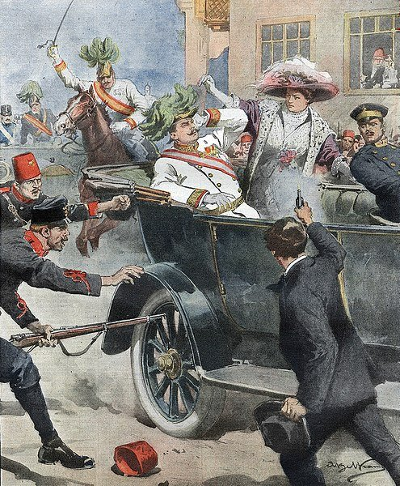

Causas de la Primera Guerra
Aqui estan algunas de las causas de la primera guerra:
- El nacionalismo: las tensiones entre países por sentirse superiores.
- El imperialismo: competencia por colonias y territorios.
- El militarismo: desarrollo de ejércitos poderosos y carreras armamentistas.
- Las alianzas: acuerdos secretos entre países que dividieron a Europa en dos bloques.
- El asesinato del archiduque Francisco Fernando: el detonante directo del conflicto.
- entre Alemania y el Reino Unido.
- Conflictos en los Balcanes.
- Desconfianza entre potencias europeas.
- Planes militares ofensivos sin margen de negociación.
Pero, ¿qué desencadenó la Gran Guerra? La principal razón hay que buscarla en la rivalidad económico-colonial que en aquella época existía entre las grandes potencias, así como en las reivindicaciones nacionalistas por parte de Alemania, la cual consideraba que debía ejercer un papel aún más hegemónico a nivel mundial debido a su elevado desarrollo industrial. En aquellos momentos, Europa era el centro económico, político y cultural del mundo. Sin embargo, el Viejo Continente parecía no compartir los mismos objetivos. Francia, Gran Bretaña y Alemania competían entre ellas por ser líderes industriales en Europa a pesar de la incuestionable ventaja alemana. Por su parte, Rusia, los imperios austrohúngaro y otomano y las pequeñas naciones balcánicas habían empezado a modernizarse a pesar de que la mayoría de su población aún vivía de la agricultura.
Así, la principal causa del estallido de la Primera Guerra Mundial debería buscarse tanto en la necesidad de hegemonía política y económica de las principales potencias industriales, Francia e Inglaterra por un lado y Alemania por otro, como en la exaltación nacionalista en los diferentes conflictos territoriales. La unificación de Alemania en el año 1871 la había convertido en una gran potencia que amenazaba de manera directa los intereses económicos tanto de Francia como del Reino Unido. Alemania se hallaba en plena búsqueda de nuevos mercados y pretendía ampliar su imperio colonial, todo lo cual ya había provocado tensiones, puesto que el reparto que habían diseñado Francia y Gran Bretaña distaba mucho de las pretensiones que tenía Alemania en aquellos momentos.
 >